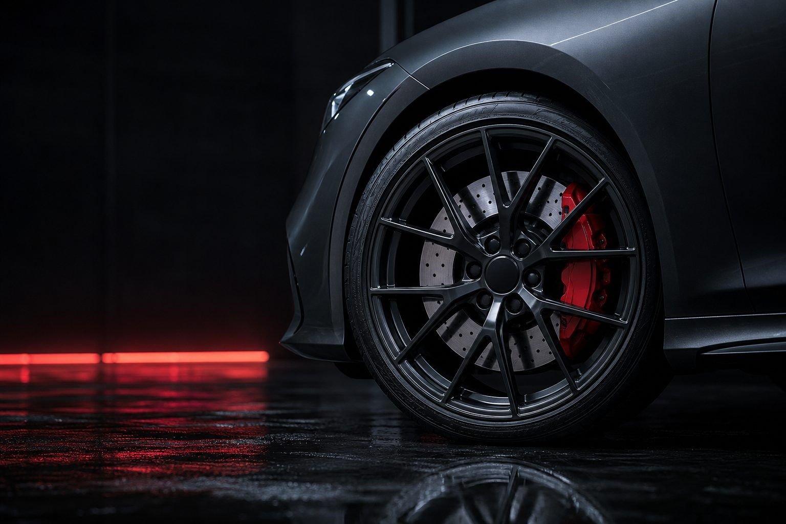
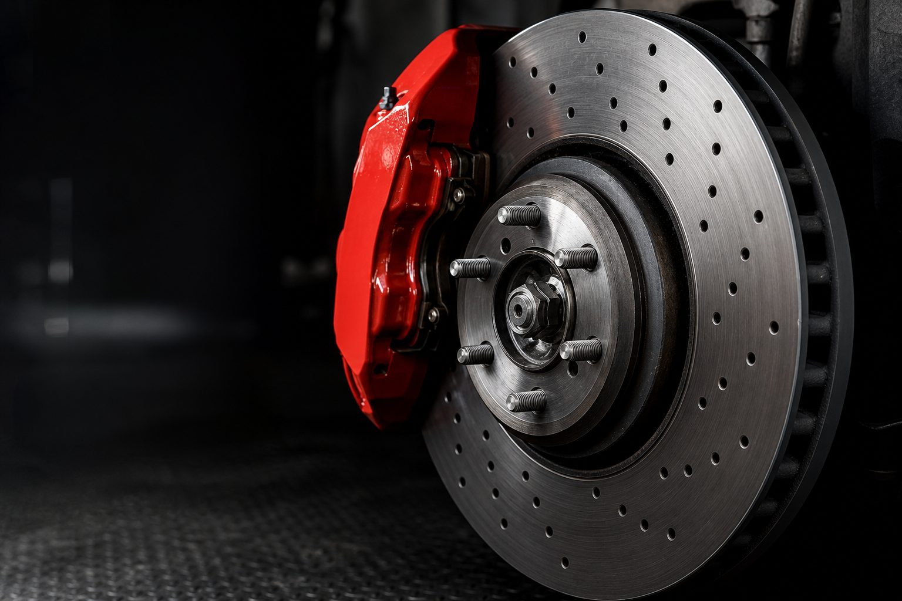

01
Заміна гальмівних дисків
Знімаємо старі, чистимо посадкову площину ступиці, ставимо нові з новими колодками. Після — обкатка і перевірка биття.
від 700 грн / вісь

Диски, колодки, супорти, рідина. Заміряємо знос, показуємо деталь і називаємо ціну до початку роботи.
Кожна починається з вимірювання. Диски міряємо мікрометром, колодки — по залишку накладки, рідину — тестером на вміст вологи.
Знімаємо старі, чистимо посадкову площину ступиці, ставимо нові з новими колодками. Після — обкатка і перевірка биття.
Перевіряємо диск на знос і напрямні супорта. Змащуємо пальці, ставимо колодки, перевіряємо хід поршня.
Розбирання, чистка, заміна манжет і пильників, при потребі — поршня. Повертаємо рівномірне гальмування.
Повна прокачка системи по колах. Рідина класу за вимогою виробника. Перевіряємо тестером до і після.

Якщо є хоч одне — приїжджайте на огляд. Дивимось безкоштовно при подальшому ремонті.
Порівнюємо виміряну товщину з мінімально допустимою для конкретного диска. Оцінюємо тріщини, борозни й нерівномірний знос.
Перевіряємо залишок фрикційного шару та стан рідини. Строк обслуговування визначаємо за регламентом автомобіля.
Орієнтовні ціни з нашого прайсу. Підсумкову вартість робіт і запчастин узгоджуємо до початку ремонту.
Якщо диск у межах норми і без глибоких борозен — так. Якщо ні, скажемо чому і покажемо замір.
Колодки і диски завжди міняються парою на одній осі. Обидві осі одночасно — лише якщо знос показує потребу.
Залежить від моделі та обсягу робіт. Типовий час — 1–2 години на вісь. Точний строк назвемо при записі.
Пн–Нд 10:00–21:00. Узгодимо час візиту телефоном.